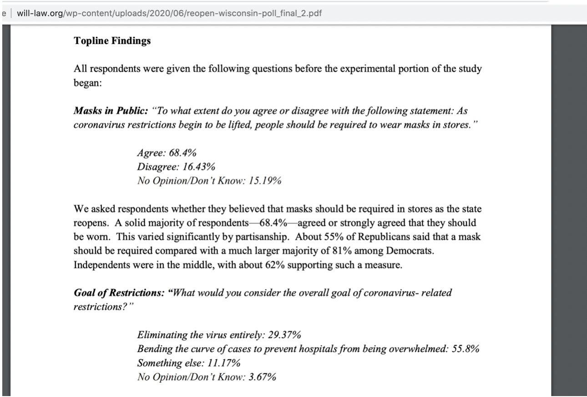
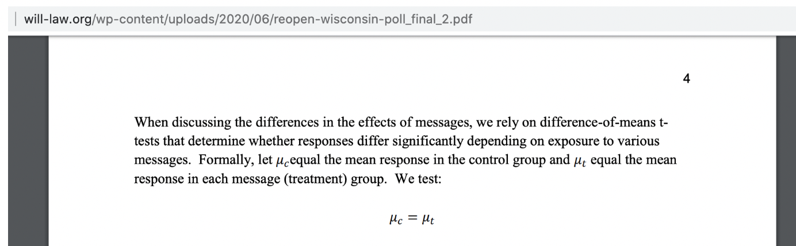
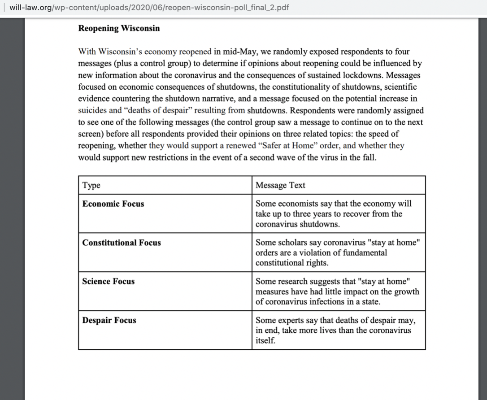

Images of Homegrown Research
- Image 1:Wisconson Institute for Law and Liberty. Homemade Research.
- Image 2:Georgia Center for Opportunity. Homemade Research.
- Image 3:Georgia Center for Opportunity. Homemade Research.
Homegrown Research
">
Hannah Arendt from The Human Condition
The SPN creates homegrown research to manufacture credibility for its publications and source materials. Homegrown evidence is the source material, research, and data the SPN produces to support misleading claims. Rebekah Wilce explains that "One requirement of SPN member think tanks, according to the National Review, is that they share their publications with each other" (SPN: Right-Wing Stink Tanks Pushing the ALEC Agenda in the States). These publications are interjected and woven into the structures and forms of a variety of professional genres to hide problematic content. The SPN produces and publishes its own research and data across its websites to support misleading claims and narratives. In a special journal issue from the Combating Terrorist Center at West Point, Amarasingam and Argentino (2020) examine how disinformation networks like QAnon are “Imitating source citation and evidence presentation in academic scholarship" to appear credible, distort the truth, and confuse readers. They contend that “QAnon followers regularly engage in elaborate presentations of evidence to substantiate their claims. In this vein, they often self-identify as investigative journalists or conspiracy researchers” when they have no expertise in those areas (Amarasingam & Argentino, 2020). The SPN conducts studies, generates empirical research, and designs surveys, interviews, and observations to feed its network. SPN affiliates publish documents about studies and mimic professional and academic genres, employing the standards and conventions for peer-reviewed research without transparent disclosure of how a study was conducted and verified. This section of the webtext provides examples of homegrown evidence and methods to identify it. Genre theory is particular useful for interrogating disinformation.
Academic and professional genres help the SPN disguise its relationship to its evidence and amplify the SPN's core messages and arguments. Learning how to identify homegrown research is an important digital literacy for marking disinformation. Knowing how networks design and circulate homegrown research is a form of crap detection. In this first example, the Alaska Policy Forum (APF), an SPN affiliate, uses homegrown evidence as a layer of disinformation. In a report published on the “Alaska Policy Forum” (APF) website, the author references and quotes homegrown research from another SPN affiliate, The Buckeye Institute. There is a link to the report below:
Figure 1: Alaska Policy Forum Policy Report. 6-5-2020.
The APF "is proud to have partnered with economic experts at the Buckeye Institute" (Marcum, 2019), but both organizations are part of the SPN and form a conflict of interest. Without knowledge of the relationship between these organizations, audiences may assume the references are from a publication outlet outside of the APF. Marcum refers to The Buckeye Institute (BI) as an economic research center that employs experts, even though the BI is an SPN affiliate that generates questionable and misleading research. Homegrown evidence helps construct a system of credibility that does not have to adhere to established verification methods. Audiences need to know how think tanks disguise homegrown evidence. Learning how the SPN's web publications are interconnected is a form of crap detection. The APF and the BI reviewed the Alaska State Budget and wrote a 49-page policy report with detailed suggestions for taxation in Alaska. The SPN created the research and evidence to support its own proposal. The APF asserted that it paid the BI to conduct a research report, but the BI is part of the same network.
The Wisconsin Institute for Law and Liberty (WILL) cites homegrown evidence from a survey it created and withholds details about the survey needed to interpret the results. Below is an image of the survey because the webpage has since been removed:

Figure 2: WILL Website. Homegrown Survey. 6-19-2020.
WILL never discloses the percentage of republicans, democrats, and independents who responded to the survey, so there is no way to account for the 55% of total survey takers. An online global marketing firm, Dynata, surveyed 556 people for the WILL survey, but there is no reference to how the sample was collected, where and when it was collected, and how it leads to a margin error of 4%. Without this information, audiences cannot interpret the survey results accurately. This is a deliberate attempt to mislead people with unverified evidence and homemade surveys. Because the SPN conducts its own primary research, and relies on it, to create evidence for misleading claims audiences need to know how to verify primary research results.
Figure 3: WILL Problematic Data Chart. 6-20-2020.
It's difficult to interpret the survey results without knowing how many survey respondents came from each party. WILL asserts that it ran “difference-of-means t-tests” to identify how other messages shaped the survey responses, but asking a series of rhetorical questions quickly exposes deeper issues with this study. What other messages is WILL referring to? Where are those messages, and what type of information will the t-tests provide us? The explanations for the value of the tests are also misleading. The use and presence of a testing apparatus and its subsequent equations forms an illusion of verifiable research similar to acontextual data, but the results of these tests fail to provide any valuable findings. There are no clear explanations for why this test matters and how it produces important results. The presence of a statistical testing tool without any context or explanation of its relevance is a disinformation tactic that confuses users and limits their ability to interpret data. Becoming aware of the tactics disinformation networks use to confuse audiences is an important critical digital literacy.

Figure 4: WILL Website. Illusion of Credibility. 6-20-2020.
WILL asked survey respondents to consider how the following unverified claims would alter their understanding and opinion for reopening the economy during Covid in 2020 before taking the survey. It is implied that the four messages are supported with evidence, but there is no evidence for these claims. The messages in the survey are provided below:

Figure 5: WILL. Disinformation Survey. 6-20-2020.
The first message references “some economists” but does not provide names or sources. The rest of the messages follow the same pattern. “Some scholars,” “Some research,” and “Some experts” are mentioned, but no names are provided or referenced. This is an example of homegrown disinformation that is disguised as evidence from an objective survey. Audiences are unaware of how WILL manufactures and references its own data. Citing evidence from a networked affiliate without making that relationship transparent is a tactic for disguising disinformation. Homemade research is created to compete with truths and facts.
The Josiah Bartlett Center for Public Policy (JBCPP) publishes numerous articles on its website that refer to studies conducted by other SPN affiliate groups. The Competitive Enterprise Institute (CEI), an SPN affiliate, conducted a study for a JBCPP report titled, “Study estimates N.H. cost of Green New Deal at more than $74,000 per household in first year” that reads and functions like fake news. Moreover, the article from the JBCPP website quotes Matthew Gagnon, the CEO of the Maine Policy Institute, in addition to David Flemming from the Ethan Allen Institute and Andy Fowler, a communications specialist, from the Yankee Institute, all of which are SPN affiliate members, serving the same interests and narratives. In the “Great Lakes Natural Fluctuation,” the Badger Institute quotes SPN expert, Jason Hayes, the environmental director at the Mackinac Center for Public Policy. It is this connection between affiliates that facilitiates a network of disinformation that can perpetuate falsehoods over long periods of time. Because a significant amount of the SPN's research is misleading, and the goal of the SPN is to provide a sustained set of narratives that privilege the interests of industry, corporations, and politicians, the SPN is a disinformation network.
Figure 6: Badger Institute. Questionable Evidence for Climate Science Denial. 6-19-2020.
The article from the Badger Institute falsely correlates the water level rise in the Great Lakes to a lack of global warming, and it argues that global warming doesn't exist because the water levels in the Great Lakes have always risen and dropped over time. The focus on anti-climate science is one of the SPN's main narratives for disinformation. The SPN consistently publishes anti-climate science on its websites that is misleading or has been debunked. The author of the article does not cite any evidence to support their claims. There is a quote from Cornwall Alliance, an organization that is part of the Heritage Foundation, a Christian nationalist organization that also denies that global warming exists. This article also cites a report from Science Daily (p. 9) without providing the title of the report. Many of the references in SPN publications are difficult to locate and verify or they come directly from the SPN. Websites afford the SPN an opportunity to publish and circulate homegrown sources and to bypass an external peer-review process before they are disseminated for public consumption. Obfuscating where sources come from is a disinformation tactic that audiences need to learn how to recognize.
On its website, the Georgia Center for Opportunity (GCO) argues that welfare, which it defines as social security and medicare, is “the leading driver of the ballooning U.S. national debt and annual budget deficits," and it references homegrown research to support these claims. This disinformation narrative about welfare debt is networked across SPN platforms as a deep story. Below is an example of how the GCO cites homegrown evidence in a report.
Figure 7: GCO Website. Homegrown Evidence. 6-7-2020.
The link to the reports sends audiences to the GCO homepage to find the reports. Figure 8 is an example of the GCO's use of homegrown evidence in its branding campaign about problems with poverty. To produce one of the reports, the GCO hired The Heart and Mind Strategies, a branding and marketing firm, to design a sociological study on poverty. The methodology for the study is confusing and difficult to interpret. The links to the report have since been removed from the website.
Figure 8: GCO Website. Homegrown Evidence. 6-8-2020.
The GCO uses several different surveys to collect data for the study and each one has a different N value. There also are no explanations provided for these numbers and surveys. Audiences never learn how poverty is defined for this study or what the demographics are for the parents and teens who took it. One phase of the study occurs in Georgia and Utah without an explanation of why. Audiences have no idea how phase two of the study is nationally representative or will use data from two states to represent national consensus. Audiences also do not learn what the omnibus survey and the illumination lab are and where to find them to make sense of this content. There are unanswered questions about this study that effect the value of its results. Learning how to recognize these types of inconsistencies is vital for marking disinformation. The SPN intentionally uses homegrown research to support alternative facts and distort truths. Disinformation networks manufacture data and evidence to disguise misleading content so that it can remain in public circulation for long periods of time. In addition to homegrown evidence, SPN affiliates also publish large acontextual data without providing a summary, context, or interpretation of the data. Misleading Data.